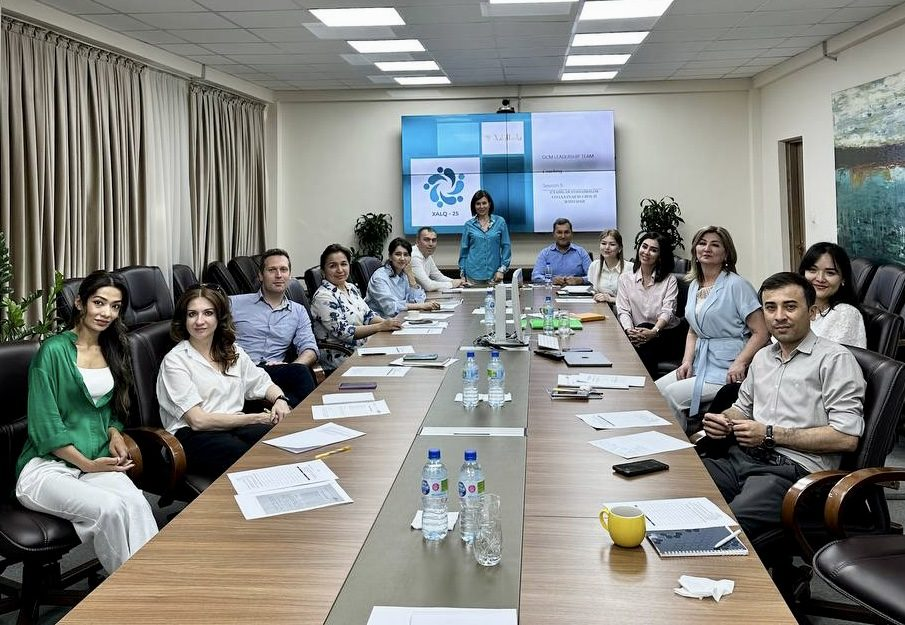

THE ONLY CONSTANT IN LIFE IS
The success of your company is not determined simply by its ability to change, but by its ability to change faster than the competition while preserving and strengthening its culture, people, and brand.
Most organizations invest heavily in strategy, systems, technology, and operations during transformation. The people side — leadership alignment, communication, trust, adoption, and culture — often receives the smallest investment of all.
And yet… underinvestment in the people side of transformation is the #1 predictor of transformation failure.

What stood out most was Dr. Malka's ability to quickly understand the deeper organizational dynamics behind operational and leadership challenges. Masha brought a rare combination of strategic thinking, emotional intelligence, cultural sensitivity, and the ability to build trust across different levels of the organization.
Today, the Bank commands recognition as one of the preeminent state-owned financial institutions, attracting exceptionally talented professionals. Masha has played an instrumental role in cultivating confidence and mutual trust within the leadership cadre. I endorse her without reservation as an exemplary Strategic Transformation Partner for any organization navigating profound change.
Dr. Malka's ability to navigate both strategic and interpersonal complexity simultaneously was what impressed me most. She was able to build trust across multiple levels of the organization, facilitate difficult conversations when needed, and create an environment where people felt engaged rather than resistant to change.
What distinguishes Masha is her ability to bridge strategy and human behavior. She understands that successful transformation is not only about processes and structures, but also about trust, communication, leadership cohesion, and organizational readiness for change. Her contracted days were extended several times at the client's request — which speaks for itself.
Most transformations don't fail because the strategy was wrong. They fail because the people side — alignment, communication, culture, and trust — was never properly addressed.
With 25 years of experience working with major financial institutions, corporations, and leadership teams across multiple continents, I bring the strategic intelligence and human depth that transformation actually requires.
I have built change management networks of 700+ leaders and change agents inside institutions of 10,000+ employees — and I have the results to show for it.
Forbes Coaches Council · Top 100 Speakers to Watch 2025 · Honorary DAS in Entrepreneurship
A single conversation is enough to know whether there is a fit.
No pitch. No pressure.
Just an honest exchange about where your organization is and what it needs.